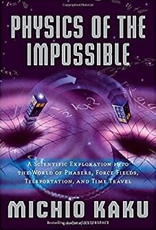

This is my number one book about computers. As it's title suggests it reveals the "magic" of how computers work, starting at the smallest level and working its way up. Normally books covering such heavy topics tend to be boring, but the read is fun and facinating. I wish everyone would read this.
The full title of this book is "A Mind for Numbers: How to Excel at Math and Science (Even If You Flunked Algebra)" and that basically sums it up. It's entertaining style helps to explain the most abstract concepts. By the end I had a new appreciation for math, science, numbers and myself.
About a man in a two-dimensional world where the angles you have determine your social status. It's originality is what seperates it from other math books. It's quite creative and helped me understand mathmatical concepts in a whole new light. It's thinking is quite literally out-of-the-box.
One of the best books to combine both theory and applied sciences in a way that makes sense. One hundred years ago, scientists would have said that lasers, televisions, and the atomic bomb were beyond the realm of physical possibility. This challenges future ideas with that in mind.
This is a really useful book on coding. It avoids wasting time on abstract topics of computer science like most programming books do, but instead focuses on teaching you applicable concepts that you can understand and actually begin to use immediately.